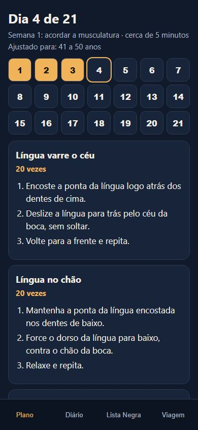
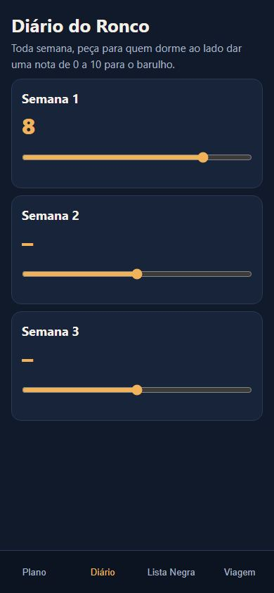
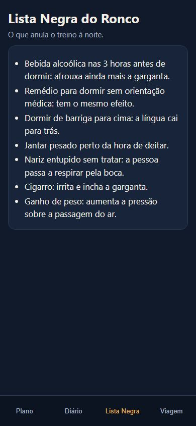
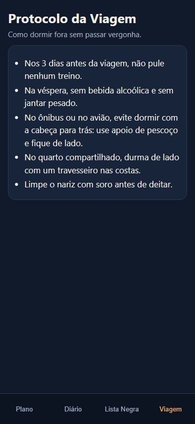

Plano de 21 dias no celular para diminuir o ronco e, em alguns casos, até acabar com ele. Sem aparelho, cirurgia ou remédios caros.
Seu músculo precisa ser treinado, mas não é qualquer coisa genérica que resolve. Quem tem 30 anos treina diferente de quem tem 50 ou 70.
Faça o teste gratuito de apenas 2 minutos e saiba exatamente quanto, qual e por que fazer cada exercício.
Qual é a sua idade?
Teste grátis e sem cadastro.
0%
Plano pronto
O que você respondeu
Seu ponto de partida
Sua primeira semana
As repetições aumentam a cada semana. Sem você precisar pensar em nada.
O produto
Nada para baixar e nada para instalar. Você abre o link e o plano do dia já está lá.




Arraste para o lado para ver as telas.
Como funciona
Por que funciona
Tudo o que você já tentou ataca o barulho. O Noite Silenciosa ataca a causa: a musculatura mole da garganta.
Nossa solução é baseada nos principais estudos sobre exercício e ronco. Em estudo publicado na revista médica Chest, o ronco medido em laboratório caiu quase pela metade em quem fez exercícios de boca e garganta todo dia, por 3 meses.
Ieto V. et al., Chest, 2015.
O que muda
Tudo o que você recebe
Tudo isso, uma vez só:
R$ 37
Menos do que uma pizza. Sem mensalidade.
Quero meu plano agoraPagamento por Pix ou cartão. Acesso na hora.
Faça o plano por 30 dias. Se achar que não valeu, devolvemos 100% do seu dinheiro. Sem pergunta e sem enrolação.
Ou o ronco melhora, ou você não paga nada.
Sendo direto
Se você quer um milagre sem fazer nada, não compre. Aqui tem que treinar.
Mas se você topa 5 minutos por dia para parar de incomodar quem dorme ao lado, é aqui que começa.
Sem aparelho. Sem cirurgia. Sem remédios caros.
Começar hoje por R$ 37Não. Só a boca, a língua e 5 minutos. O único item opcional é um balão de festa.
O acesso chega no e-mail logo depois do pagamento e abre direto no celular.
Varia de pessoa para pessoa. No estudo da Chest, o resultado foi medido depois de 3 meses. Os 21 dias criam o hábito: quanto mais tempo mantiver, melhor.
Sim. As repetições e a ordem dos exercícios mudam conforme a sua idade e as suas respostas.
O treino se ajusta à faixa de idade. Em criança e adolescente, o ronco precisa ser avaliado por um pediatra.
Apneia precisa de acompanhamento médico. Fale com o seu médico antes.
Devolvemos tudo em até 30 dias.